1. Give a high-level overview of what you have implemented in this assignment.
In this assignment, I learned how to draw triangles with rasterized isolation um, and then I learned a simple way to anti-alias using supersampling. And then after that, I learned how to transform shapes um, especially triangles, uh, using matrices. And then I used I learned how to express um, triangles with barycentric coordinates and then I learned pixel sampling and level sampling for texture mapping.2. What interesting things did you learn from completing the homework?
I learned that there's a lot of way to anti-alias um, and I found a cool um, how to do rasterization.1. Walk through how you rasterize triangles in your own words.
you basically just take the triangle, draw the boundaries, um, and then you're trying to decide if the center point of a pixel is within the triangle. And the way you do this is you basically go counterclockwise, and you take the points at the verticles of the triangle, and then you draw the lines for the sides of the triangle, and then you also draw lines to the point. And then you take the cross product of the side of the traingle with the line from the vertice to the point and u do this for all three sides. if all the cross products are the same sign, then the point is in the boundary. you do this for all points in the bounding box (basically the min and max of the x and y coordinates of the vertices forming a box (all the possible positions for points inside the triangle)2. Explain how your algorithm is no worse than one that checks each sample within the bounding box of the triangle.
both have to check all points. within the bounding box and the other computations are fixed (3) so the O = WH3. Show a png screenshot of basic/test4.svg with the default viewing parameters and with the pixel inspector centered on an interesting part of the scene.
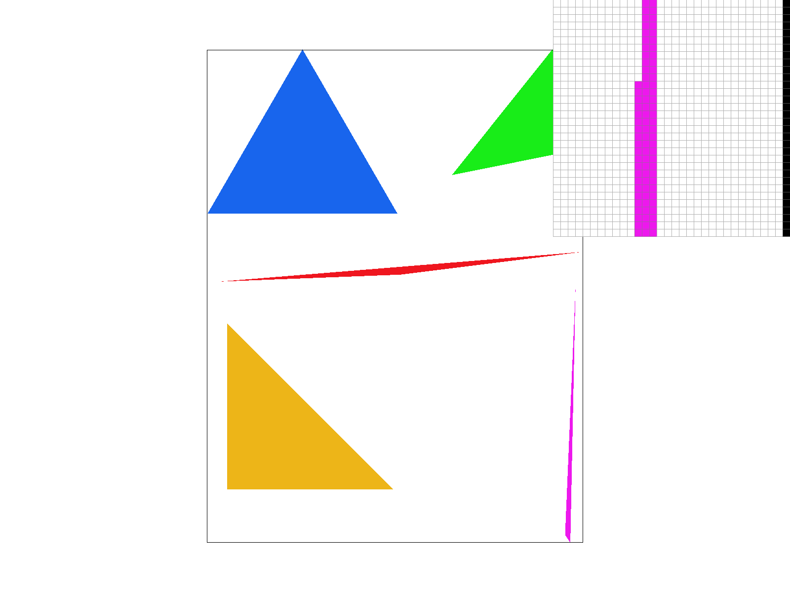
1. Walk through your supersampling algorithm and data structures.
For question one, a supersampling is basically running rasterization on a all the subpoints of a pixel and then averaging all of that out. And the way that I did this is I would basically have an array and it would compute the position and the subpixels just based off of the width and the height of the screen, like number of pixels. And also, the number of subpoints it was uh, using. And then it could just instantaneously look up in the array where the points were and then it could just average the n (n being the number of subpoints that they're using) uh, n points and then that would be shown as the color2. Why is supersampling useful? What modifications did you make to the rasterization pipeline in the process? Explain how you used supersampling to antialias your triangles.
Super sampling, just basically creates softer edges. By averaging things out, um, so it's useful for getting a smoother edge. Um, all that needed to change in the rasterization pipeline was basically more points uh, needed to be rasterized and all of the points needed to be stored and then averaged.3. Show png screenshots of basic/test4.svg with sample rates 1, 4, and 16, side by side, with the pixel inspector over an area that shows the differences (e.g. a skinny triangle corner). Explain why these results are observed.
|
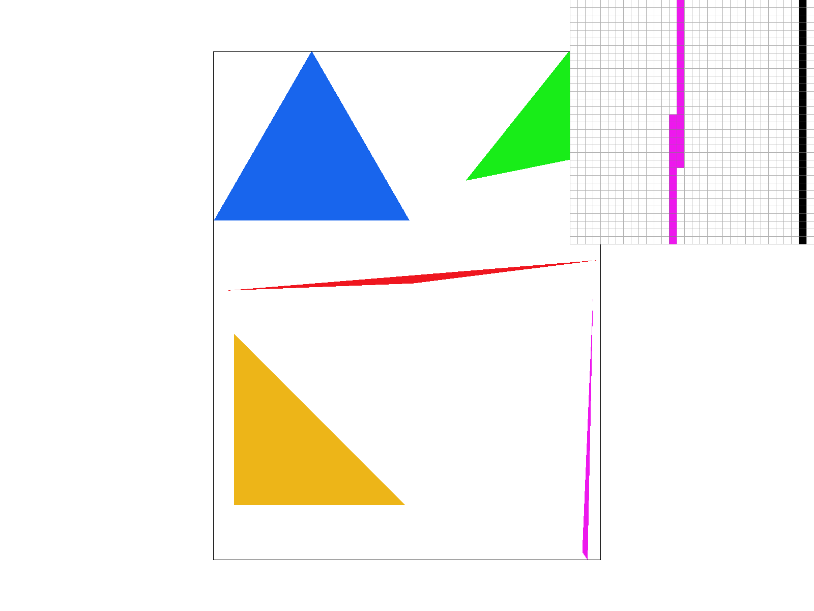 |
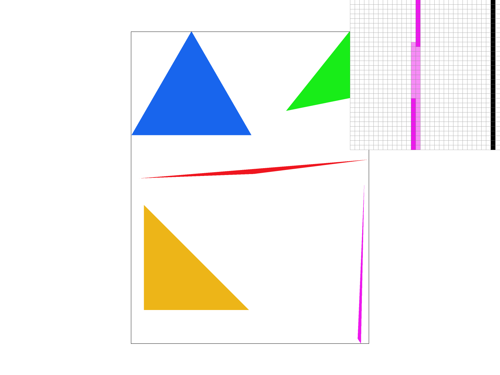 |
|
1. Create an updated version of svg/transforms/robot.svg with cubeman doing something more interesting (saved as my_robot.svg). Show a png screenshot of your rendered drawing.
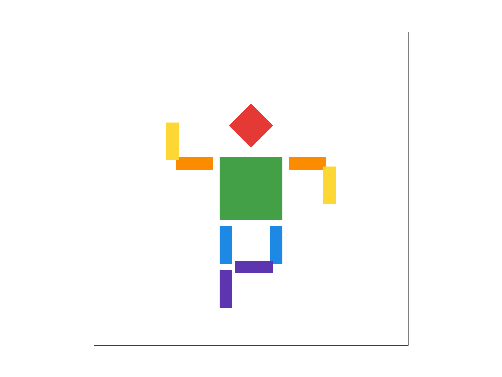
2. Explain what you were trying to do with cubeman in words.
I originally had cubman waving but then i decided to make him dance. I changed the colors around and then move some of his limbs and had him lift his leg up a bit so hes dancing1. Explain barycentric coordinates in your own words and use an image to aid you in your explanation.
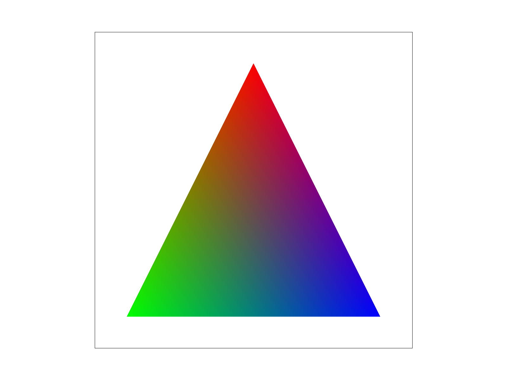
2. Show a png screenshot of svg/basic/test7.svg with default viewing parameters and sample rate 1.
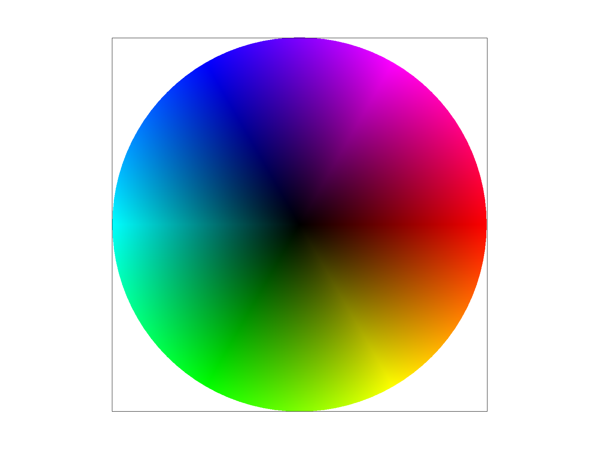
1. Explain pixel sampling in your own words and describe how you implemented it to perform texture mapping. Briefly discuss the two different pixel sampling methods, nearest and bilinear.
Pixel sampling is when you are trying to figure out the color for a pixel, you just look for the nearest texel and then you choose that. If you're using bilinear, then you're looking for the four texels surrounding that pixel. And then you're using a weighted average of those four. And then you're going to use that average as the pixel color. It is useful for texture mapping because I can convert an image of a different number of pixels um, within height and I can use that on a different um, set of pixels with a different width and height so then I can basically apply a texture onto something.2. Using a png file from svg/texmap/ where bilinear sampling clearly defeats nearest sampling, show four png screenshots: nearest sampling at 1 sample per pixel, nearest sampling at 16 samples per pixel, bilinear sampling at 1 sample per pixel, and bilinear sampling at 16 samples per pixel.
|
|
|
|
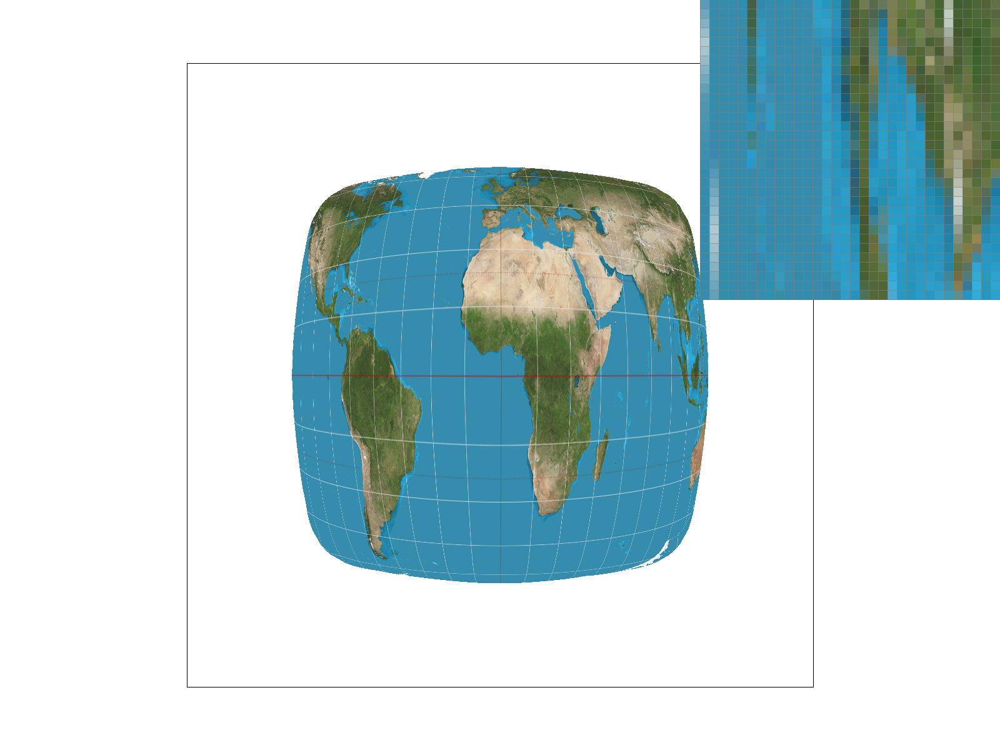 |
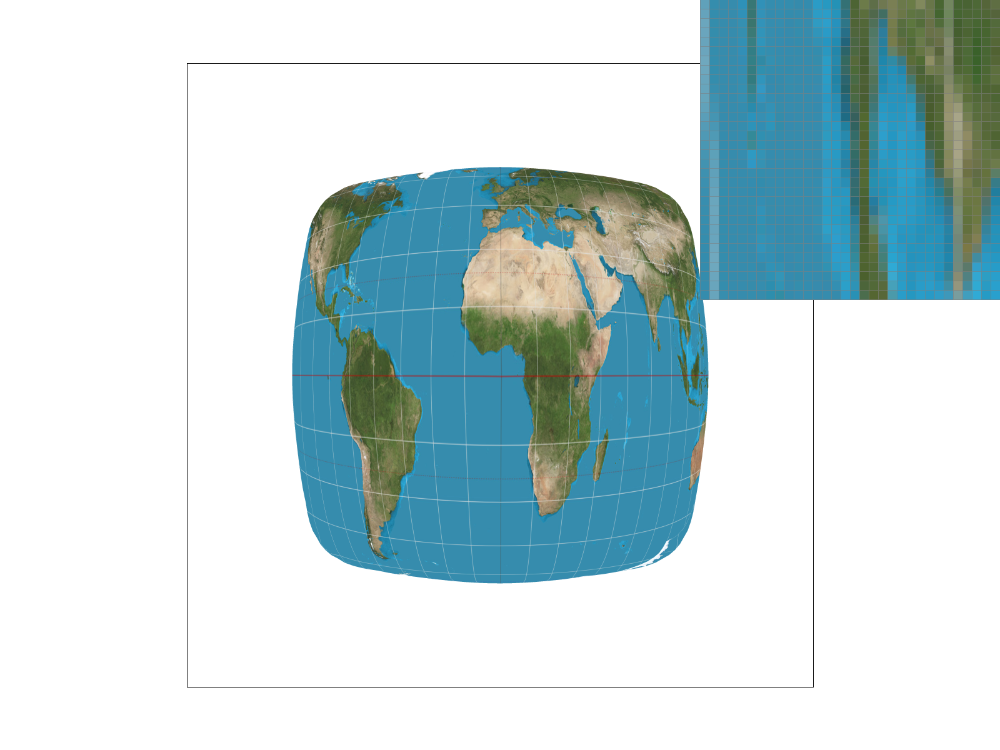 |
3. Comment on the relative differences. Discuss when there will be a large difference between the two methods and why.
the difference is much more noticeable. Um, when the sampling is lower. When the sampling is higher, it's less. Different. Bilinear with highest sampling seems the smoothest, and uh, sampling one with nearest seems to be the worst. The largest difference will be at an edge. Because nearest will just take the value. But when the colors change, there is going to be an average instead. So when the bilinear is taken, the average will be a different color. This will be especially big when the colors on the two texels or four texels are starkly different.1. Explain level sampling in your own words and describe how you implemented it for texture mapping.
Level sampling is basically trying to fit an image or a texture into a smaller number of pixels than texels. The way to do this is to keep on shrinking the number of texels you have uh, you basically um, cut them in half and by doing this you're able to get the number of texels down to an amount where you can map it to the number of pixels Repeat the halving as many times as you need. And the number of times you need to halve is the number of levels you had to go down. You need to have the width and the height. The way you figure out how many times to halve is by checking how much UV changes by moving one pixel over. for the L calculation use barycentric interpolation on a pixel and two pixels next to it (right and bottom) and then measure the difference and then multiple by the number of texels to get the pixels to texels. then, use the magnitude of the differnce in height and width for both and do the max of them, thats L for the values there, just use the averages of the 4 texels u replaced for the 1 texel u have2. Describe the tradeoffs between speed, memory usage, and antialiasing power between the three techniques: pixel sampling, level sampling, and the number of samples per pixel.
pixel sampling is how u determine what to color a point, do you use the nearest texel or the surrounding 4 texels doesnt add memory it just happens in the moment. speed is high becuase you only need to do 4 averages and aliasing power is good relative to that level sampling is deciding which mipmap level to use (u can use a whole level or a weighted average of two levels) it approaches 4/3 (number of texels) in memory with the more layers you add. it is long too, depending on the number of levels. it does get really high aliasing power though samples per pixel determines how many samples u use per pixel. adds memory proportionate to the amount of samples * pixels, which can be a lot., it just happens in the moment. its speed goes up exponentially with each additional sampling but the aliasing power doesnt increase that much because a lot of averages are already happening. each have their use cases. pixel sampling and samples per pixels have similar use cases but u up the samples per pixels with longer compute if u want more aliasing. level sampling is for high levels of aliasing.3. Using a png file you find yourself, show four versions: L_ZERO and P_NEAREST, L_ZERO and P_LINEAR, L_NEAREST and P_NEAREST, L_NEAREST and P_LINEAR.
|
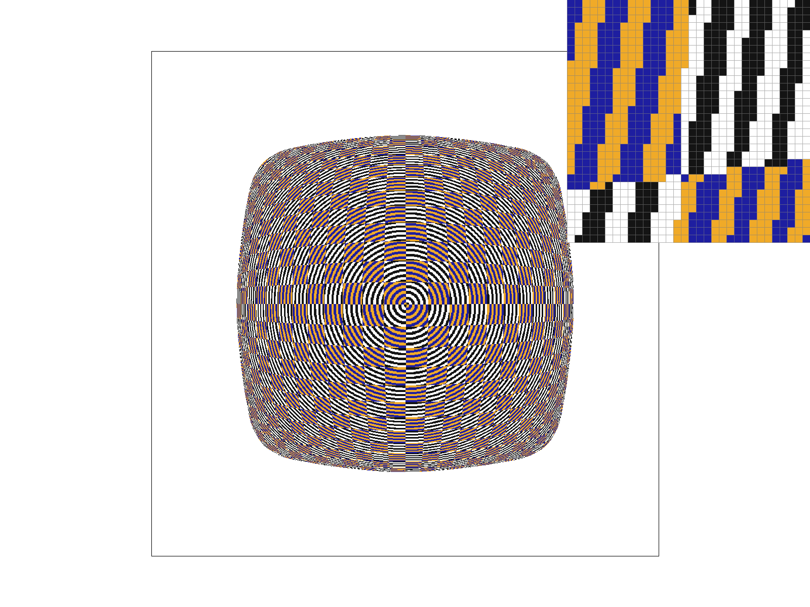 |
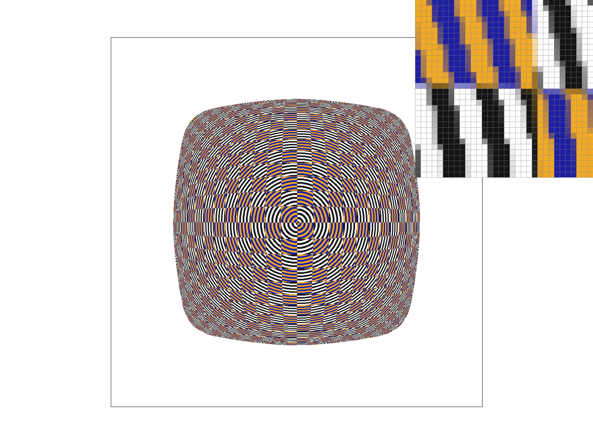 |
|
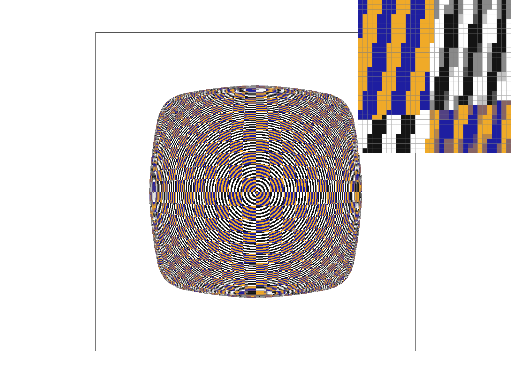 |
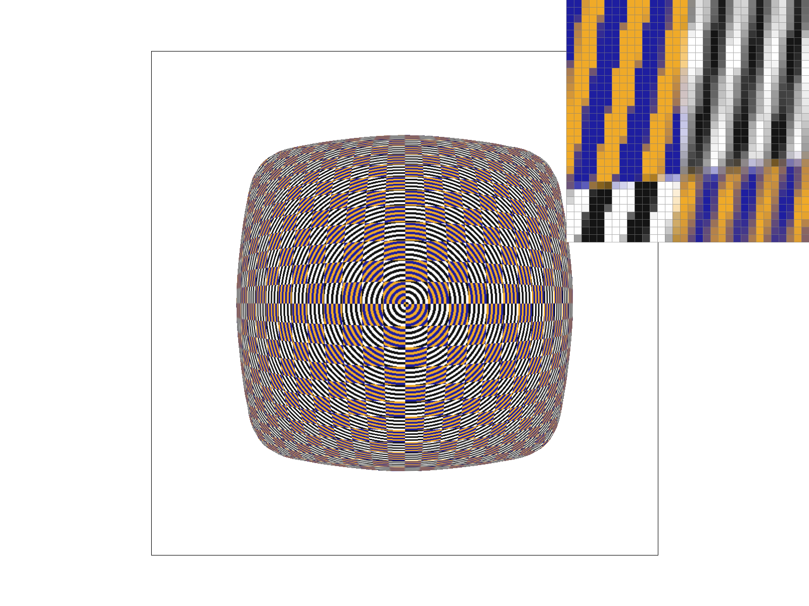 |